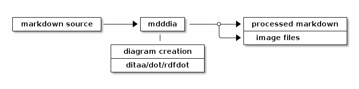
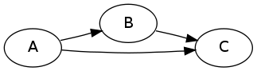
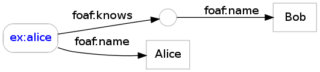

Pandoc is a Haskell program to convert between numerous document markup formats. It comes with an abstract document model and a serialization in extended markdown syntax. Pandoc was created by John MacFarlane and it is available as Open Source at http://johnmacfarlane.net/pandoc/.
mddia is a simple, dirty Perl script to preprocess and convert diagrams embedded in pandoc's markdown syntax. This is a temporary hack because of lacking Haskell skills. Anyway, the script may be rewritten, but the underlying principles and data format will stay.1 Up to now the script supports the following diagram types:
a java program created by Stathis Sideris to convert diagrams in ASCII art to PNG images. It is available at http://ditaa.sourceforge.net/. Mikael Brännström created an extension to convert diagrams to EPS, available at http://ditaa-addons.sourceforge.net/.
GraphViz's graph description language. See http://en.wikipedia.org/wiki/DOT_language for more information.
RDF graphs based on RDF/Turtle. The command line program rdfdot is included in the CPAN package RDF::Trine::Exporter::GraphViz.
Ditaa is bundled with this script, while GraphViz and rdfdot must be installed manually. This script, pandoc, ditaa, dot, and rdfdot are all licensed as free software.
mddia acts acts as filter that makes use of diagram creation programs to process a markdown source while emitting some image files.

Image files can be emitted in PNG format (the default) or in PDF format. You can choose the image format by command line option -pdf or -png. To create HTML from markdown via pandoc, call for instance:
./mddia README.md | pandoc -s -t html > README.html
Or to create PDF:
./mddia -pdf README.md | markdown2pdf -o README.pdf
Diagrams are embedded in Markdown as source code blocks. This way your documents are valid and processable even without mddia (your diagrams will only show up as source code). For instance the image above was created with this code block:
~~~~~ {.ditaa .no-separation}
+-----------------+ +--------+ +--------------------+
| markdown source |------>| mdddia |------*--->| processed markdown |
+-----------------+ +--------+ | +--------------------+
| \--->| image files |
+------------------+ +--------------------+
| diagram creation |
+------------------+
| ditaa/dot/rdfdot |
+------------------+
~~~~~
All "class names" (the strings starting with a dot) after the diagram type are passed are argument to the diagram creation. For instance
~~~~~ {.ditaa .no-shadows .scale:0.4}
Is passed to ditaa as --no-shadows --scale 0.4.
~~~~ {.dot .Grankdir:LR}
digraph {
A -> B -> C;
A -> C;
}
~~~~
~~~~ {.rdfdot}
@prefix foaf: <http://xmlns.com/foaf/0.1/> .
@base <http://example.com/> .
<alice> foaf:name "Alice" ;
foaf:knows [ foaf:name "Bob" ] .
~~~~


mddia is available at https://github.com/nichtich/ditaa-markdown. Feel free to fork and extend under any free viral open source license. The files README.html and README.pdf in the repository may be out of date compared to the original README.md.
A better implementation would be based on pandoc's scripting API: http://johnmacfarlane.net/pandoc/scripting.html. See the dot plugin at http://gitit.net/ for how to dot it. ↩